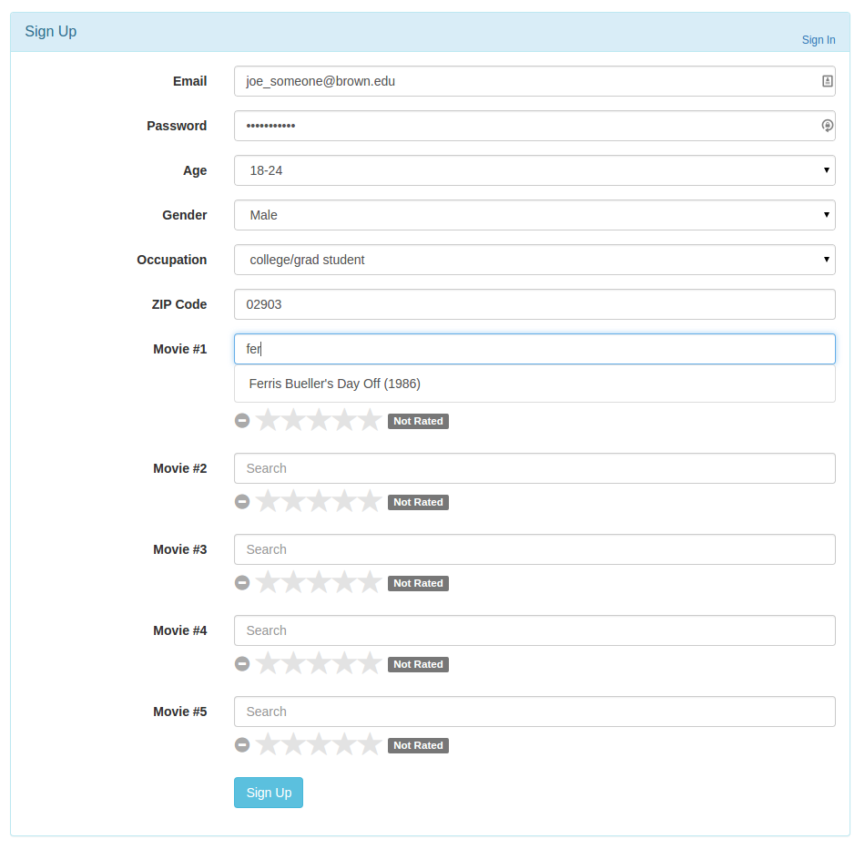

Our project goal was to create a fully functioning recommendation engine, as well as a intuitive and visual way to explore the dataset we used (MovieLens data from GroupLens). Our hope was to ultimately have an extensible and easy to use platform, to bring some of the concepts we learned in class from the command line to something resembling a commercial product. Our project can be most easily understood in two parts: the system, and the algorithm (or engine). The system refers everything that drives what people actually see when they visit the site, the algorithm encompasses our methodology for generating recommendations. In the process of creating our engine, we also came up with some questions for our data, which led us to generate some statistics and visualizations to better understand underlying trends and trivia.
At the core we utilized a LAMP stack (Linux, Apache server, MySQL, and PHP/Python) as well as some javascript libraries (JQuery and bootstrap). We chose this because of its simplicity (most hosting solutions come with everything pre-installed) and our familiarity with the technology. PHP allowed us to quickly set up and prototype the website, and integrated easily with MySQL and Python thanks to this particular stack’s widespread usage and library support.
The engine itself is written in Python, and interacts directly with the website and the MySQL database in order to make recommendations. There are some finer points to its operation that we will discuss in the algorithm/engine section.
When a user signs up for the first time, they are asked for some basic demographic information (age, ZIP code, gender) as well as their ratings for five movies they have already seen. When entering a movie, our site searches our movie database and only shows movies that we are able to match against (see below). This is what lets the engine make effective recommendations. Once a user has watched a movie, they are able to enter in their rating, which is added to the dataset and used to make further predictions. We also have the capability of recommending movies by genre (as specified by the dataset we are using).
One issue we encountered was quite simple: our hardware was not up to the job. The web host we were using did not give us access to a Google style server farm, meaning many computations were significantly slower than if we ran them on our laptops. This is further discussed below.
Our algorithm went through several iterations before we arrived at something that both performed well and gave decent results. From the beginning we knew we wanted to use a form of collaborative filtering, our question was how.
Our initial hypothesis was that a user clustering system would be best. Essentially, our algorithm would look for "friends" of the user (meaning other users whose tastes were similar, as determined by in-common movie ratings) and make a ratings prediction based on user similarities. What we had not considered in the beginning was that such a system could be very sensitive to even a single new user, or any other form of new data. What this means is that every time a user requested a recommendation our algorithm would have to chew through the entire dataset, nothing could be precomputed without potentially losing valuable information. Adding to the is the anemic computing power of our host, which meant that operations that took a fraction of a second on our local machines often took multiple or even tens of seconds online. Ultimately this meant scrapping this idea, even though we had a fully working engine.
We concluded we would need to use a method that would allow us to offload significant computation upfront, which led to an item based method (where the items are individual movies). We were able to precalculate a movie similarity table, an operation that took approximately 30 minutes to run and would thus be infeasible to do in a real time application. This lead to a speed increase of roughly two orders of magnitude, with some specifics depending on hardware and what exactly was being asked. Below are some sample times to illustrate.
user-based for all genres: 49.32 seconds
item-based for all genres: 12.04 seconds
user-based for scifi:9.43 seconds
item-based for scifi:0.18 seconds
user-based for action:17.77 seconds
item-based for action:0.13 seconds
Overall we are satisfied with how our project came out. We were able to hit nearly all of our 100% targets, and also managed some of our stretch goals. We found most of our issues came from mundane problems, such as underpowered hardware and dealing with things like our webhost not having all of the tech we needed (necessitating some creative library usage and command line tricks). We were disappointed that our initial user based algorithm did not work. Although after some testing we found we could increase its speed by roughly a factor of five by utilizing some precomputation, it still did not reach the speed of the item based method.
The most obvious expansion, and the one we would pursue if we had more time, is to use the demographic data more fully in order to provide a more sophisticated engine. Part of the reason we chose to use the dataset that had a million ratings rather than the one that came with 10 million was the availability of demographic information. This allowed us to do more analysis and create more interesting visualizations, but it meant sacrificing scale.